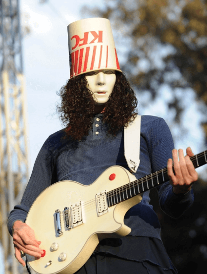

Brian Patrick Carroll nacido en California, Estados Unidos el 13 de mayo de 1969, mejor conocido como Buckethead es un llamativo guitarrista por su talento y forma de vestir a la hora de subirse al escenario o dar entrevistas (de las cuales son pocas), ya que suele mantener un perfil bajo a pesar de su extraña manera de actuar y de vestir en público, según el viste asi no solo porque cuando comenzó tocando era alguien bastante tímido al subir al escenario si no también porque siempre fue muy amante de las películas en general, especialmente las de terror y de personajes como Michael Myers (Antagonista principal de la serie de películas de Halloween).
Buckethead cuenta que tuvo varias influencias musicales, incluyendo a Michael Jackson, Parliament-Funkadelic, Shawn Lane, Michael Schenker, Uli Jon Roth, Paul Gilbert, Yngwie Malmsteen, Jimmy Page, Eddie Hazel, Randy Rhoads, LaLonde Larry, Mike Patton, Joe Satriani, Louis Johnson, Jimi Hendrix, Jennifer Batten, The Residents, Eddie Van Halen y Angus Young de AC/DC, así como los muchos artistas con los que él ha colaborado con los años. Además de sus influencias musicales, Buckethead también cita una gran cantidad de influencias no musicales, incluyendo a los jugadores de baloncesto Michael Jordan, George Gervin, Blake Griffin y LeBron James, el artista marcial y actor Bruce Lee
A pesar de ser una persona tímida y quizás tener gustos raros para algunos, el siempre tuvo muy buena relación con sus padres dedicándoles canciones y hasta álbumes enteros como por ejemplo “Hold me for ever” dedicado a su madre cuando falleció siendo considerado uno de los mejores “Pikes” (es una seria de álbumes a parte que no están enlistados en esta página aun ya que son más de 500) de Buckethead.
También ah tenido muy buena relación con algunos amigos de toda la vida y formó parte de algunas bandas de muy corta duración ya que el siempre prefirió ir mas por su cuenta, eso no impidió que Buckethead haga colaboraciones con otros artistas ya sea componiendo música para álbumes o incluso soundtracks para películas y algunos videojuegos.
Entre los artistas con los que Buckethead ah colaborado tenemos a Bill Laswell, Bootsy Collins, Bernie Worrell, Iggy Pop, Les Claypool (Primus), Mike Patton (Faith No More), Serj Tankian (System of a Down), Viggo Mortensen, Buckethead también ha escrito e interpretado música para películas como: Saw II, Ghosts of Mars, Beverly Hills Ninja, Mortal Kombat, Mortal Kombat: Annihilation, Last Action Hero, y la banda sonora de Power Rangers: la película.

Buckethead es conocido también por su baile robótico sobre el escenario, además de por sus demostraciones con el nunchaku, incluso mientras toca la guitarra. También regala juguetes suyos al público, así como el público también le suele dar juguetes a él.
También fue incluido en las listas de la revista Guitar World de "Los 25 guitarristas más extraños de todos los tiempos" y "Los 50 guitarristas más rápidos de todos los tiempos". GuitarOne votó por él como el número 8 de "Los 10 mejores guitarristas shredders de todos los tiempos".
Como ya comentamos en los párrafos anteriores Buckethead siempre fue alguien de perfil bajo ocultando siempre su rostro y de no brindar muchas entrevistas, lo cual hace un misterio gran parte de su vida privada, aunque en otra sección hablaremos de datos extra en la sección Bonus de esta página.
La biografía oficial de Buckethead señala que fue criado en un gallinero por gallinas y según él, sus amigos de la infancia eran pollos, (apropiadamente él ha escrito varias canciones a principios de su carrera que se refieren a las gallinas como la canción "Chicken" y "I Can Only Carry 50 Chickens At a Time" o los títulos de los álbumes "KFC Skin Piles" y "Enter the Chicken") luego de cierto tiempo él mismo quiso escapar y vivir su propia vida.
Obviamente esta es la biografía del personaje Buckethead y no de la persona, ya que Brian nunca ha dado una oficialmente de su vida fuera del personaje.